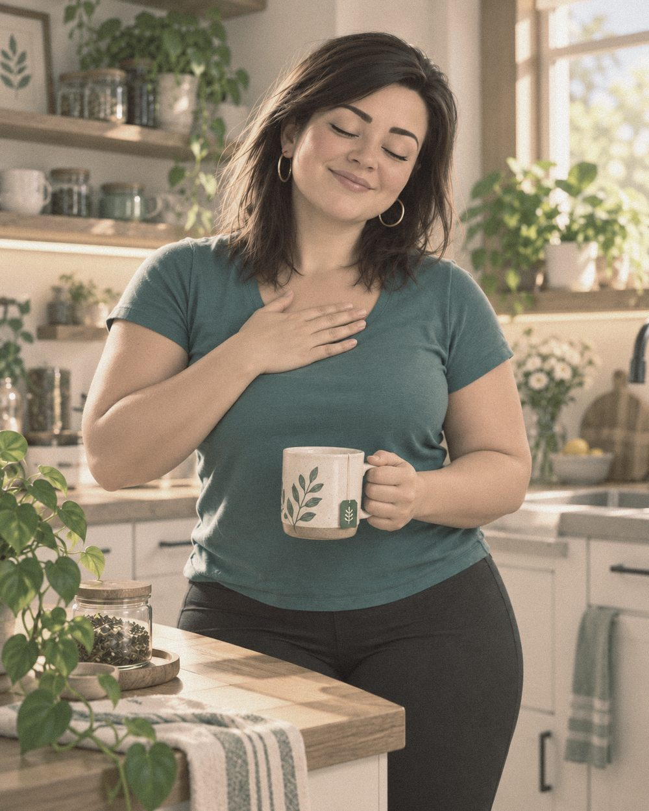
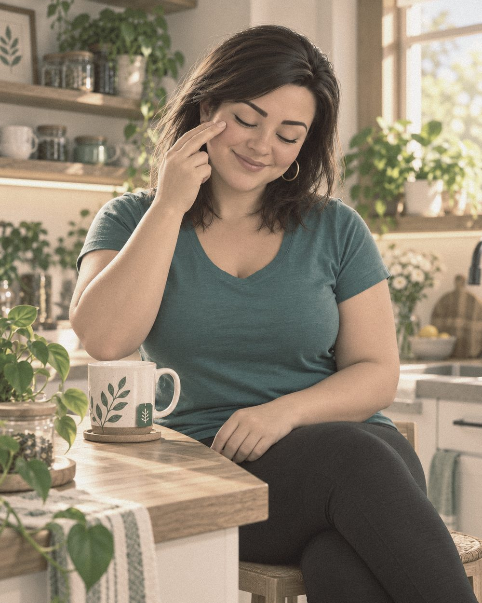
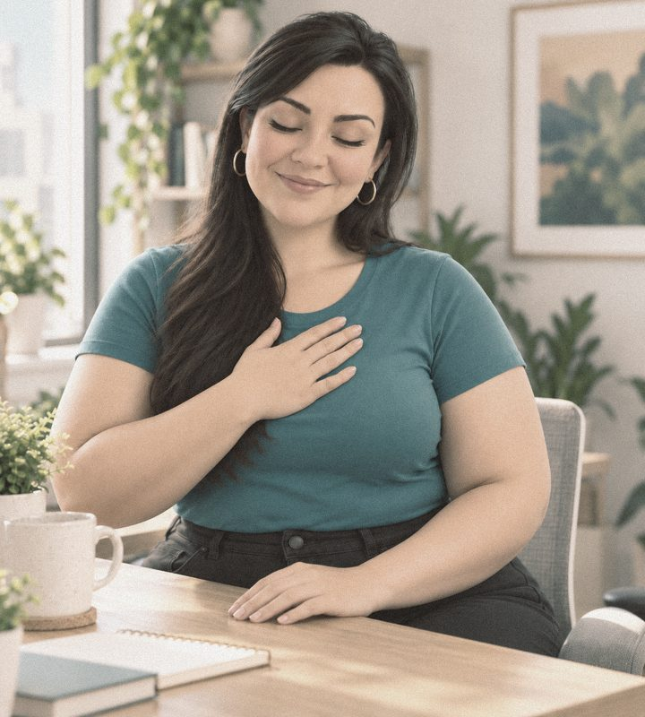

Before you startWhat this is, when to do it, how each day works
Here are ten minutes to feel better.
Stressed. Tense. Overwhelmed. Too much on your mind and too much in your body. Nothing is wrong with you. Your system is carrying a lot.
This short practice helps you set it down. You feel what’s here, catch the thought that’s making it louder, and move it out through your body. No experience needed. Nothing to get right.
The commitment is 10 minutes. Daily. 21 days to build the foundation. Stage 2 unlocks after this one.
Before you begin. This only works when you actually do it. The shift happens in your body, so follow the order: sensation first, emotion second, thought third, then release.
Curious why this works? There is a short note at the end, for after your practice. Read it here ↓
- Morning. Before the day’s noise arrives. This is when you build the habit.
- In the spiral. When overwhelm peaks. Two minutes is enough to interrupt it.
- Evening. Name what the day activated and set it down. What you don’t process, your nervous system keeps holding.
Three parts, in this order. Same every day. Do not skip ahead.
Optional Build mindfulness one text at a time.
Text (701) 543-5900These are tips. Short exercises to build mindfulness during the day, when the spiral is loudest.
You get a text. In the middle of a meeting, with your kids, whatever you’re doing. You stop for a split second, follow the exercise, and go back to your day.
Msg & data rates may apply. Msg frequency varies. Reply STOP to unsubscribe at any time.
Sink into what’s here

You don’t have to fix anything yet. For two minutes, the only job is to feel what’s here.
A. Breathe in
Take three slow, deliberate breaths. Inhale for 4 counts. Exhale for 6.
The longer exhale tells your brain you are not in danger right now. It moves you from automatic to aware.
B. Find it in your body
Without trying to fix anything or judge what you find, ask yourself: Where in my body am I feeling overwhelmed right now?
Scan gently. Maybe it’s a tightness in the chest. A buzzing through your limbs. Shallow breathing, tension behind your eyes, your mind jumping before it finishes anything. Notice it first. You don’t need to name it yet. Approach it with curiosity, like you’re encountering it for the first time.
C. Let yourself name it
Now give it a name, in your own words. Overwhelmed. Anxious. Tired. Stretched thin. Whatever is true. You don’t need the perfect word. Say it quietly to yourself: I’m feeling…
Right now I’m feeling:
Write it in a notebook or your notes app, or for lines to write on.
Then let it be here for a few breaths. It’s allowed to be here.
Feeling it without fixing it is the practice of acceptance. Acceptance does not mean you like it, or that it stays. It means you stop arguing with what is already here.
No judgment. No “I shouldn’t feel this.” You are not doing it wrong. Whatever you find is allowed, and meeting it this way is what lets it begin to move.
Catch the thought
You’ve felt it. Now listen for the thought that goes with it. With overwhelm, your mind is usually running a lot of them at once.
A. Write your thoughts
Set a timer for 60 seconds. Write down every thought your brain is generating right now. No editing. No organising. Just let it out.
Read back what you wrote. These are sentences in your mind, not facts about your life. You’re catching the thought before it runs the show.
B. Find a new thought, a gentler one you can believe
Thoughts shape emotions. Emotions shape actions.
Look at your list. Find the thought carrying the most charge.
Current thought:
We are not forcing a positive replacement. Your brain won’t buy that, and it will feel worse. We are loosening the grip on this thought just enough to allow something slightly more spacious in. A thought you can actually believe right now.
Try these on and see what fits:
- “I have a lot to do. I can choose what comes first.”
- “I don’t have to solve everything today.”
- “One thing at a time is enough.”
- “I’ve been here before and found my way through.”
My new, gentler thought:
Sit with it. Breathe. Notice if there is even a small release somewhere in your body when you think it. A little less chest tightness. A bit more air. That is what we are going for.
Move it through the body, then close

A. Tap it through
EFT (Emotional Freedom Techniques) involves tapping specific acupressure points on the face and body while staying present with the feeling you named in Part 1. Research shows it reduces cortisol measurably. The mechanism is direct: tapping sends calming signals to the amygdala, interrupting the stress response at its source.
EFT Tapping Points
The points: top of head, eyebrow, side of eye, under eye, under nose, chin, collarbone, under arm.
Brad Yates: EFT Tapping for Overwhelm
Hold the feeling you named in Part 1 while you tap. Tap for about four minutes, as much of the video as you have time for. If the charge softens, notice it. If it doesn’t, that is okay too. Keep the last two minutes for what comes next.
B. Gratitude
This isn’t about pretending the overwhelm wasn’t real. It’s about shifting your nervous system from a threat orientation toward the present. Genuine gratitude changes what your brain is scanning for. Your body follows.
Write down 3 things you are genuinely grateful for right now. They don’t need to be significant.
- 1.
- 2.
- 3.
Once you’ve written them, take one breath. Let the sensation settle in your body, not just your head.
C. Notice what’s here
Place one hand on your heart. Notice any sense of ease that’s here now. A quiet feeling of being connected to something bigger than the overwhelm. You don’t have to make it bigger. Just notice it.
Then choose one statement that feels steady and believable right now. Not aspirational. Just true.
- “I’m allowed to take this one step at a time.”
- “I don’t need to carry everything at once.”
- “I support myself today.”
Take one slow breath to seal it. Then gently return to your day.
You followed something that knew what you needed.
You opened this page because something in you knew you needed a pause. That was your intuition, and following it is the first part of the practice.
What you just did is grounded in research on attention, emotion and the nervous system. Slow breathing, feeling what is here, catching the thought and moving it through your body each have science behind them. Together they train mindfulness, the skill of noticing what is happening without being run by it, and acceptance, the skill of letting it be here without judgment.
You don’t need to understand it for it to work. Each time you do it, you build a skill, the way a muscle gets stronger with use. The pause gets easier to find. Stage 2 shows you more of how it works.

You showed up for yourself today. That is the practice.
You don’t have to feel perfect to be finished. Notice what’s different from when you started. Even a little lighter, a little steadier, counts. Come back tomorrow and do it again.
Do this daily for 21 days and it becomes a steady place you can return to whenever things get loud. Once you complete these 21 days, Stage 2 opens. That is where you learn to see what has been underneath all along.